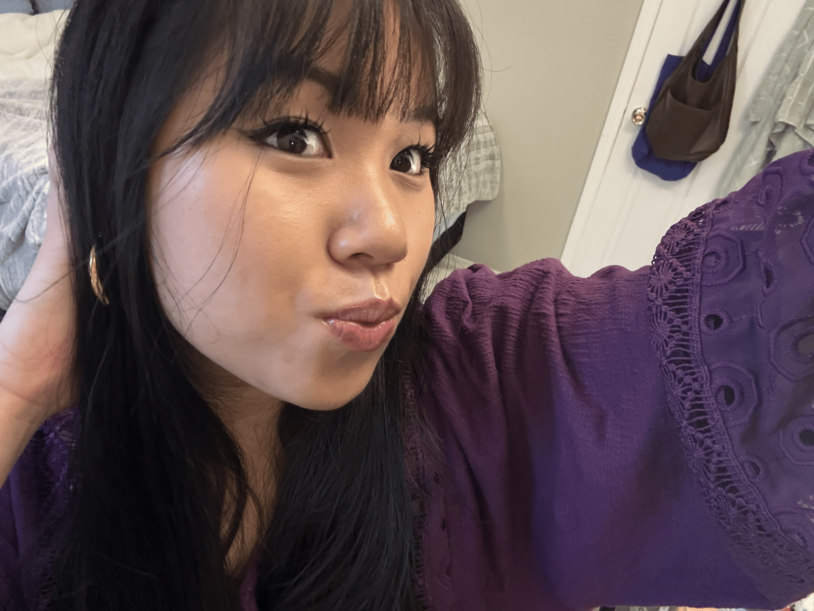
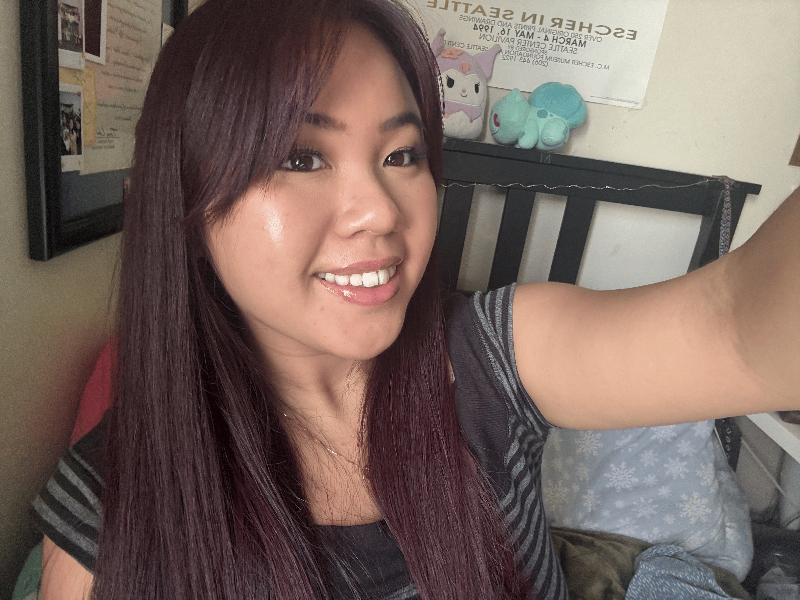

Hi! My name is Julia Nguyen & I am a 4th year CS major / Education minor @ UC Irvine.
This site is currently under construction... 🚧
If you would like to learn more about me, please check out my dear good friend's website: Rose Enos.
But quickly, the purpose of the website revamp is to focus more on who I am as a person (interests, current work, etc.).
I would love to use this website as a creative outlet and also, a way for people to know me outside of my resume or prior work I have done.
Speaking of interests, I am currently re-reading (and aiming to go past the last chapter I read) Chainsaw Man. I just finished (caught up) with the Hunter x Hunter manga, and I am loving the current arc. I need more.
DISCLAIMER: neither of these photos capture my current hair style (lol), but I thought it was funny how I am doing the exact same pose in both.